About
About Projects
Projects Books
Books Games
Games Stories
Stories Store
Store Notes
Notes How-to
How-toMeds
Context. Hakazi has been on his own for a while in Montore after leaving the Solo Devs(yet again), following a fight with Ikkard and Kaddali. His symptoms are getting worse, he can no longer control his outbursts. To try and limit the damage he causes, he visits a clinic in Montore (owned by Jak and Nemerald) to try and get some meds.
This comic is forever unfinished, I kept some of the rough pages in the end for the hell of it :>...
Jak's second language is màkoua(French dialect), this explains why he doesn't pronounce certain words correctly (dis, dat instead this, that). He doesn't pronounces "H" or "TH" sounds. It was a bit difficult to contrast this to Hakazi's dysarthria, but I did my best lol...
Content Warning. Some swearing.
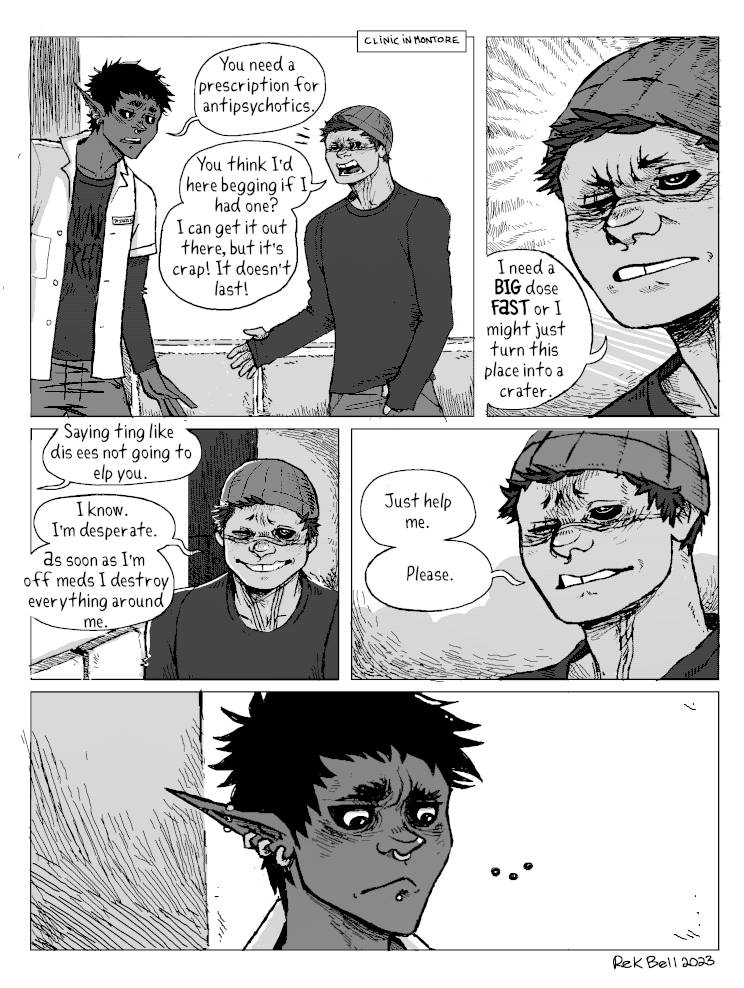 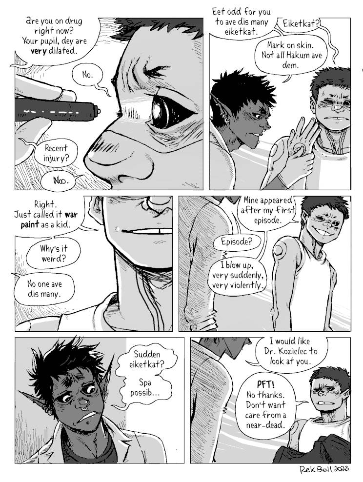 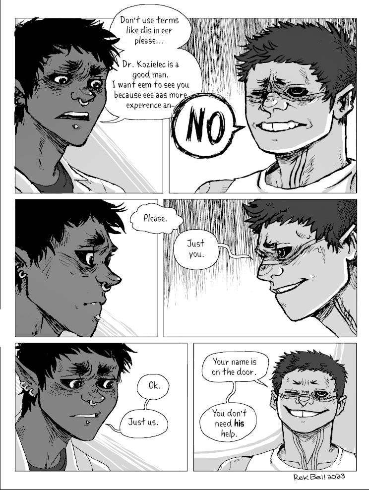 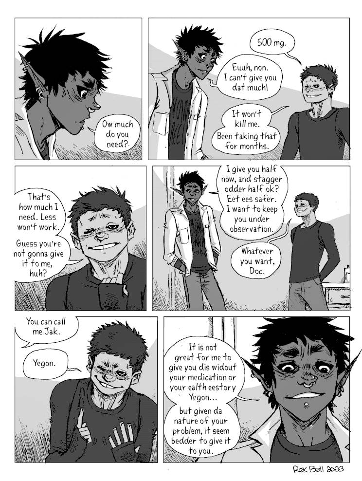
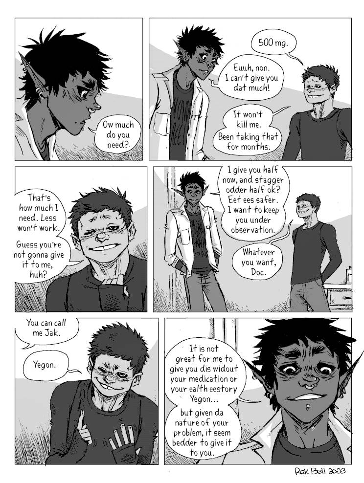
 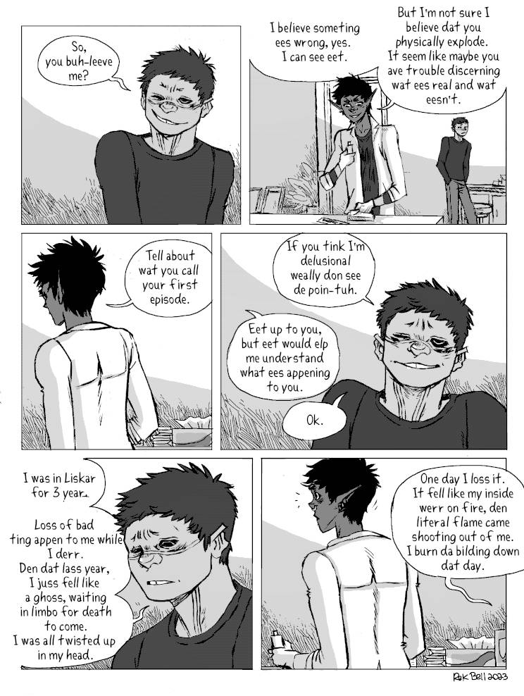
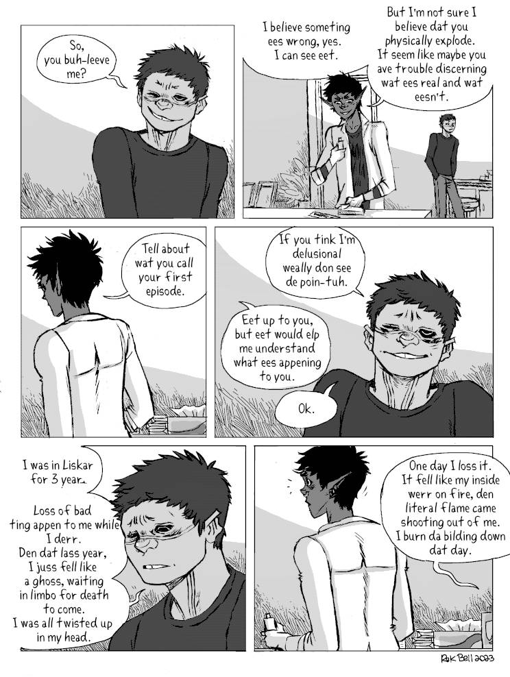
 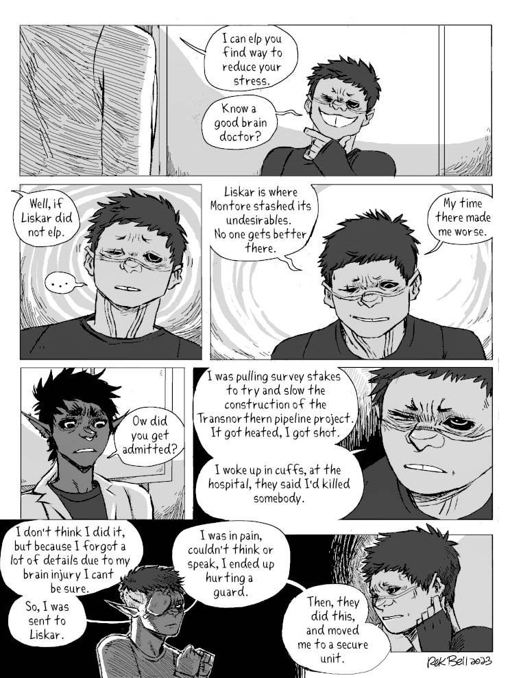
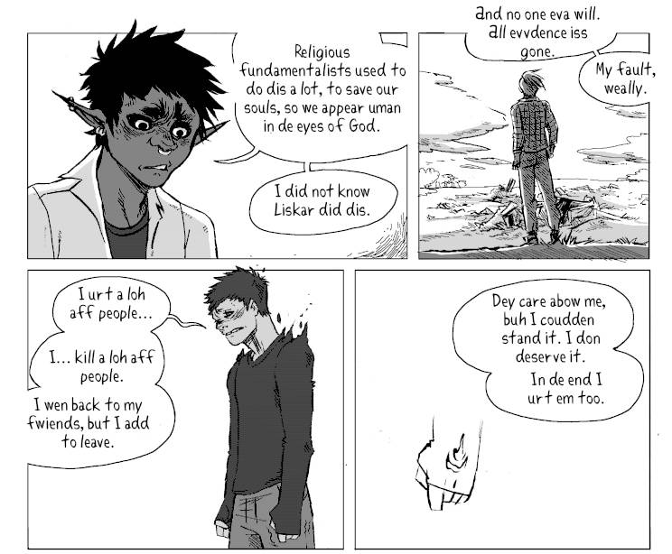
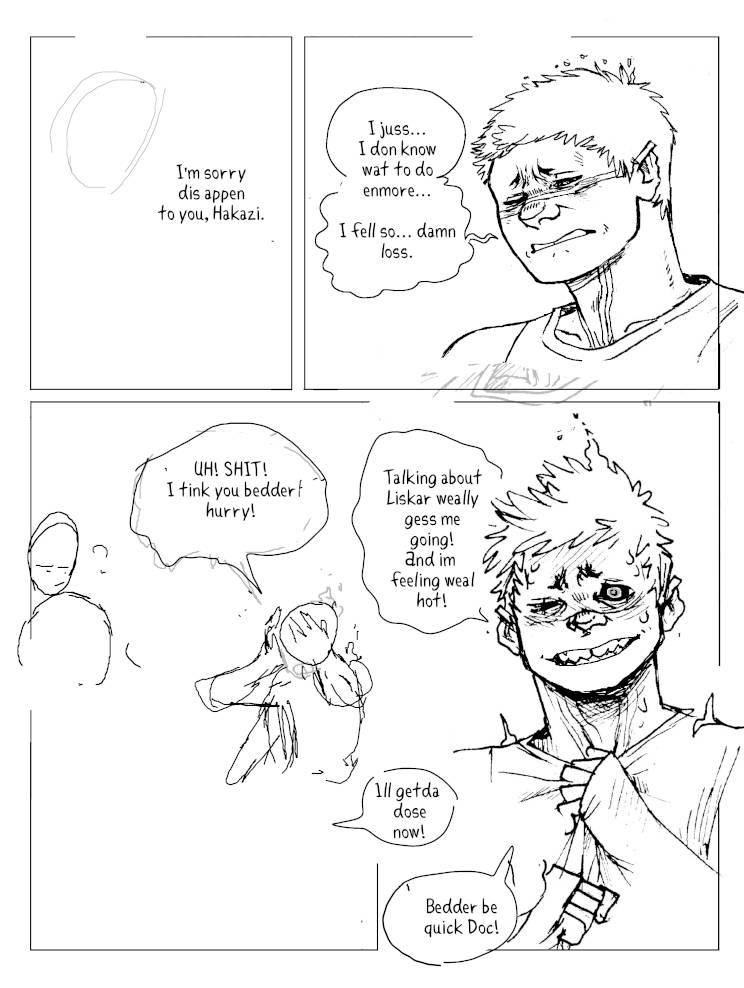
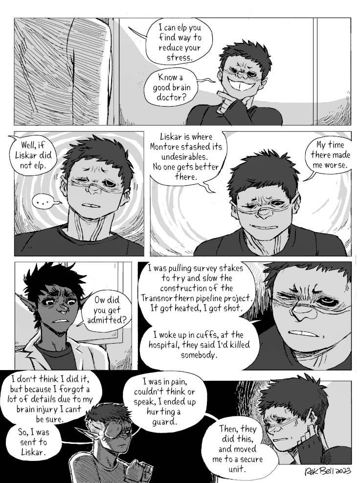
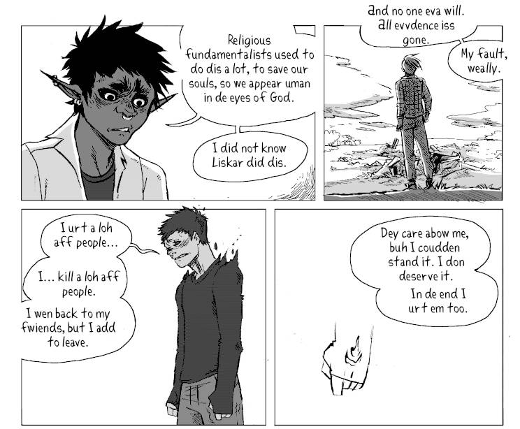
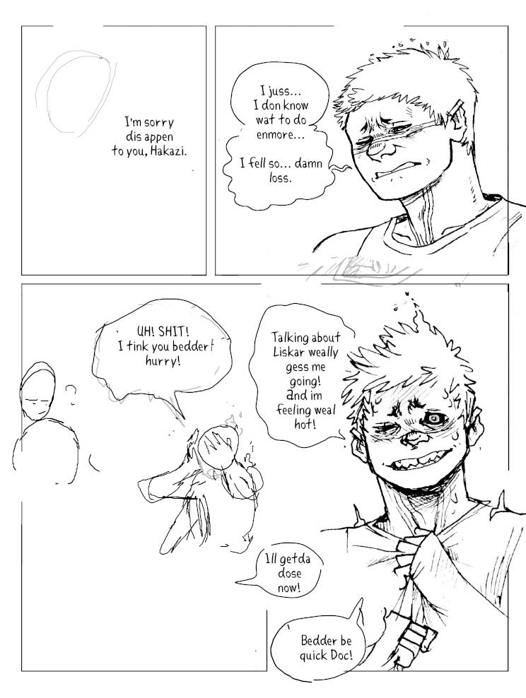
Go back to the hakum main page.